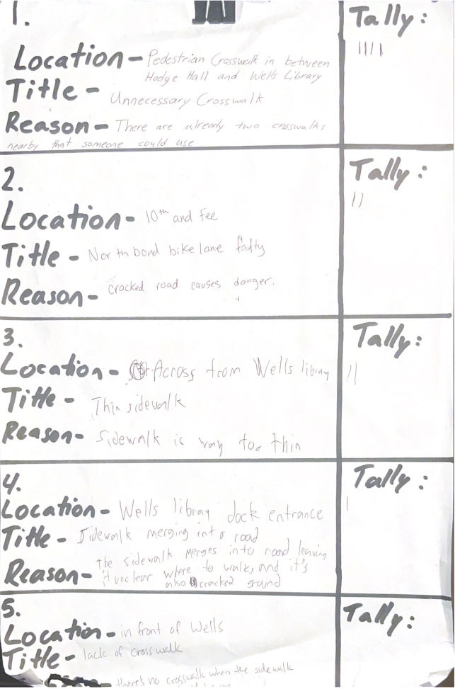

Pain Point
Role
UI & UX
Experience Prototyping
Interaction Design
Team
4 Members
Timeline
10 Weeks, November 2023
Pain Point is a mobile app platform designed to empower college students to voice their concerns about the built environment on a university campus setting. Students can voice their concerns by creating their own posts, or increase the general awareness of an issue by signing on other users’ posts.
With both potential interactions, Pain Point’s goal is to amass signatures of specific issues to in order to recognize and value the opinion’s of students.
How it started
During one of the first lectures of my Interaction Design Thinking class, my professor prompted a discussion about an infamous crosswalk in the heart of Indiana University’s campus and the different factors contributing to the problem. I left this fun, in-depth discussion with a real passion to not only delve further into topics discussed in class, but to seek a greater understanding in transportation and traffic on IU’s campus.
Approach
Based on the class discussion, our team sought to learn how students perceive transportation issues and envisage potential solutions. To achieve this goal, we conducted interviews on busy sidewalks of IU’s campus to gather instant feedback from real participants. Additional participants were recruited through surveys which later were compared with the responses from the interviews.
A foundational survey was conducted, with a second iteration being a modified and adjusted survey designed to target insights identified in the initial one. In total, my team gathered 123 responses, with at least 87 being distinct responses from the survey as there was a modified second version of the survey. Only three in-person interviews on the sidewalks were conducted, and in retrospect, I believe that having additional interviews would have diversified the collected data.
Insights
- Students are passionate about transportations issues and hold many opinions on what reform may look like
- Students don’t think that change is possible for the issues they experience because they are too broad and ambiguous for a one-to-one solution
- Because there are so many problem areas within transportation, students feel like an effort to change them will be inconsequential to their daily lives
“I mean yeah I would like all transportation issues fixed but it's IU baby, let's be serious.”
“I’m not sure there’s anything anyone can do about it.”
Problem Statement
Students need a more effective method to passionately voice their concerns to make them believe change is possible for the built environment.
How Might We?
Based on the insights from primary research, I facilitated a brainstorming activity by creating questions that may generate possible solutions:
- How might we make students feel that their opinions are being heard?
- How might we make students feel that change is possible?
- How might we increase communication and awareness of unknown issues faced by other students?
Design Process
To begin the design process, concepts were formed based on the “How Might We” questions in the form of an iterative design brainstorming activity. Subsequently, the concepts were evaluated on the framework of if they are desirable, feasible, and viable, leading to a concept.
Initial Brainstorming
Reporting Platform Concept
- Pointing out an issue- Users can select different parts of physical architecture on a map that cause problems on campus.
- Reacting to an issue- Users can react to a certain problem identified by someone else in an attempt to gain consensus.
- Feature for multiple points to be selected- There is an additional option to select multiple pain points if it involves more than one piece of physical architecture.
Design Inspiration
To get a better sense of the type of communication that would be most impactful for users, inspiration was taken from change.org, which uses a petitioning system that allows for users to create their own petitions and also sign on other petition posts. As a small iteration, a design change was made to allow users to sign on other posts instead of reacting as it better aligned with answering the research goal: How might we increase communication and awareness of unknown issues faced by other students?
Experience Prototyping
Based on the main experiences of making a post and reacting to a post, it was decided that in order to truly understand how a student would interact with the concept, it would need to be put in real world context.
To best simulate this experience, a prototype in the form of a clipboard was created. Participants were tasked to write any issues that they found relevant that they would like to make a post about. If a participant saw another post on this page that they agree with, they can tally next to that post.
Trying to give participants the freedom to simulate a realistic use case proved difficult, so the participants were given the freedom to go wherever they wanted for as long as they wanted.
Primary experiences to be tested:
- Signing/Tallying
- Making a Post
Are users likely to sign off or tally other users’ posts? In what order do interactions occur and in what steps do they take?
How does the user navigate the process of filling out information for a post?
Insights from Experience Prototyping
After conducting prototyping experiences from 4 participants, there were many insights gathered, and some that had not been considered at all. In hindsight, there should have been more deliberation for what needs to be answered from the prototyping experience.
- Users acknowledge issues that may not affect them personally but tend not to take any more action.
- Users are drawn to titles and tally posts without looking into more detail with the rest of the information.
- When making a post, users would be confused with how to fit aspects of the pain point into given labels.
- Visuals are crucial in making sure users know where pain points are from other users.
Designs Based on Experience Prototyping
Making a post

Signing a post
Home Page
Usability Testing
To receive feedback on the designs, participants were gathered to perform the tasks of making a post and also signing another post.
Insights and Opportunities for Improvement
- The current commenting method is not intuitive
- The meaning of signing a post in unclear
- There was some confusion about whether they could fill out information
Opportunity for improvement- Make it clearer that users need to sign a post before posting a comment
Opportunity for improvement- Create an informative onboarding process to give first time users a better idea of what the different features are
Opportunity for improvement- Clearly outline the fidelity of the prototype or increase the functionality of filling out information
Final Design
Figma Here
Reflection
- Establishing Goals
- Communicating with Group Members
Outlining the goal of methods in the design process is imperative in creating user-centered designs. Ultimately, the goal of the method isn’t just about doing the method for the sake of doing it, but actually about gathering insights that fill gaps in your understanding of the user group and their problems. Additionally, the information that is gathered from these methods is meant to be critically analyzed. In hindsight, if more time were spent trying to understand why people answered or performed tasks a certain way, a more satisfying final product would have been produced.
I also learned the importance of valuing others' opinions in a group setting. As a designer, it’s commonly understood that listening to and collecting insights from users is necessary in the design process. What I grossly underestimated, though, is that sometimes groups also require similar communication. While many times I struggled with articulating ideas with my group when facilitating conversation, the miscommunication that sometimes transpired allowed for my group to provide unique ideas or change my approach in reaching common ground. If others in my group are struggling to understand a concept or function, it is increasingly likely that the same can be said about real users, making it all the more imperative that I am clear in my communication.
Future Improvements
For future design-related projects, outlining the goals of a method should be the first step before performing the method. Asking myself and my team a question like “what are the insights that we are planning to get out of using this method?” will be conducive to a better understanding of a user group’s problem space.
Acknowledgments
This project owes its success to the contributions of my team members: Spencer Dowd, Rachel Dwaram, and Rylan Kagan.